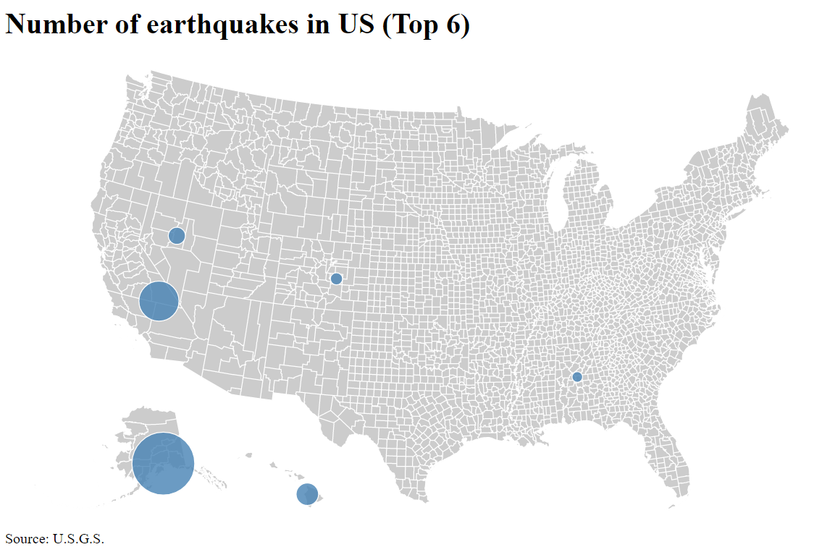
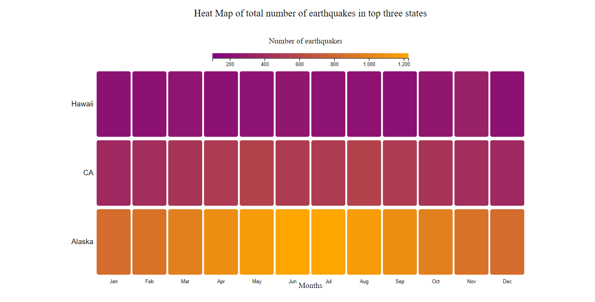

Alpha Release
Back ground and Motivation
In the most destructive disasters list till now, two of them in the top 4 are earthquakes. In spite of having the data related to the previously happened earthquake events, it is really hard to use that data to analyze for making future predictions. There is a lot of need to know the earthquake-prone areas and where more care should be taken. The motivation for choosing the dataset is to help the scientists get to know about which are the earthquake-prone areas also for the government to be prepared for facing such unexpected disasters to reduce the loss.
Description and objectives
The project is an attempt to help the researchers and people interested in geospacial science about earthquakes. The project is a story telling about the earthquakes happened in United States in last 2 years (2018-01-01 to 2020-10-28). It contains 4 main visualizations.
- P1: What are the top three most earthquake-prone regions by the province/state in the United States?
- Once the scientists can see which are the earthquake-prone regions they can study different statistics about these areas and compare them according to how much earthquake prone the area is by getting how many earthquakes are happening in the region. Also, they can analyze which region is the most earthquake-prone of all.
- As shown in revised proposal, the result is getting in symbol map. As the aim is to find the top places where number of earthquake is more, currently I am showing only top 6 places in the symbol map.
- Current result for symbol maps (in d3.js)

- P2: For the top three regions, how many earthquakes struck in which months of the year?
- The researchers can analyze the changes in the number of earthquakes according to the months and can see monthly trends in the number of earthquakes.
- The result is a heatmap of the top three places over all the months.
- Current result for heat maps (in d3.js)

Upcoming immediate milestones
- (Week 3) P2 will be added
- (Week 3) P3 will be added and all sync up will be done
Roadblocks
- The dataset has lots of outliers and takes time to process.